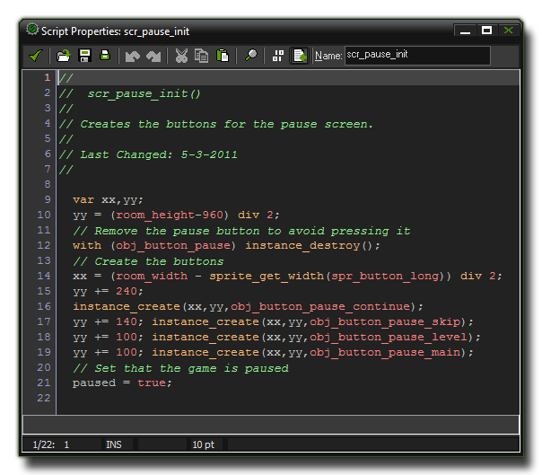

A code block consists of a set of instructions, called statements, that are then interpreted by GameMaker: Studio and used to make something happen within your game. That "something" can be as simple as
adding 2 and 2 to get 4, or as complex as making an enemy run away when their health gets below a certain value. The actual structure of the program can vary greatly, depending on the functions it uses, but broken
down to basics it just looks like this:
<statement>;
<statement>;
...
Statements should be separated with a ';' symbol to prevent errors with variable declarations and to keep your code clean and tidy, and can consist of variable declarations, expressions and calls to specific functions or scripts. Here is a more visual representation of how a code block can look, this time created as a script in the GameMaker: Studio Script Editor: 
There are a number of different types of statements and functions, which are discussed at length in subsequent sections of the manual.